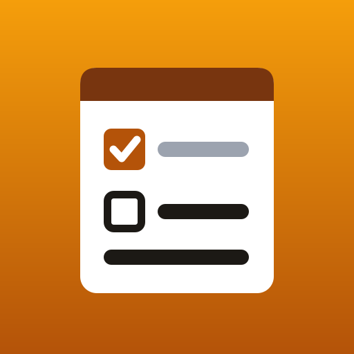

Big Print Notepad support
A large-print notepad and shopping list: notes and checklists with big checkboxes, text up to twice as large, simple folders, search, pinned notes, and sharing as plain text. Everything stays on your device. No ads, no accounts, no internet.
Get it
- Samsung Galaxy phones and tablets: search for "Big Print Notepad" in the Galaxy Store.
- Fire tablets: search for "Big Print Notepad" in the Amazon Appstore.
Bigger text and colors
Open Settings in the app to choose the text size, light or dark colors, and high contrast. The app also follows your device's own font size (Settings → Display → Font size).
New device
Sign in to the same store account on the new device and download Big Print Notepad again from your library at no charge.
Refunds
- Purchases are handled by Samsung. To ask for a refund, open Galaxy Store → Menu → Orders, or contact Samsung through the Galaxy Store help pages.
- Purchases are handled by Amazon. To ask for a refund, contact Amazon customer service (amazon.com → Your Account → Your Apps & Devices, or Help → Contact us).
Something not working?
Email k.fitzgerald310@gmail.com with what happened, your device model and the app version (shown in the app under About).